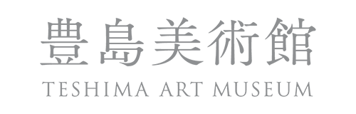
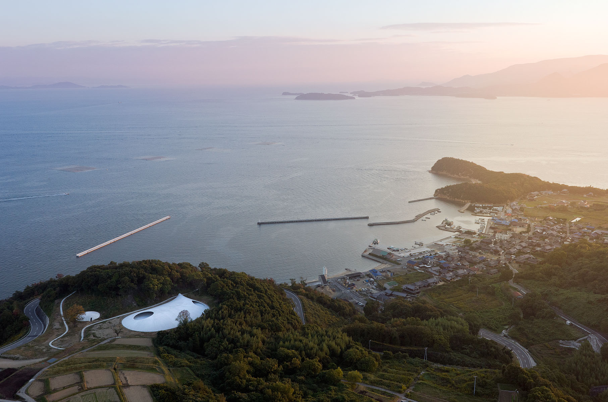
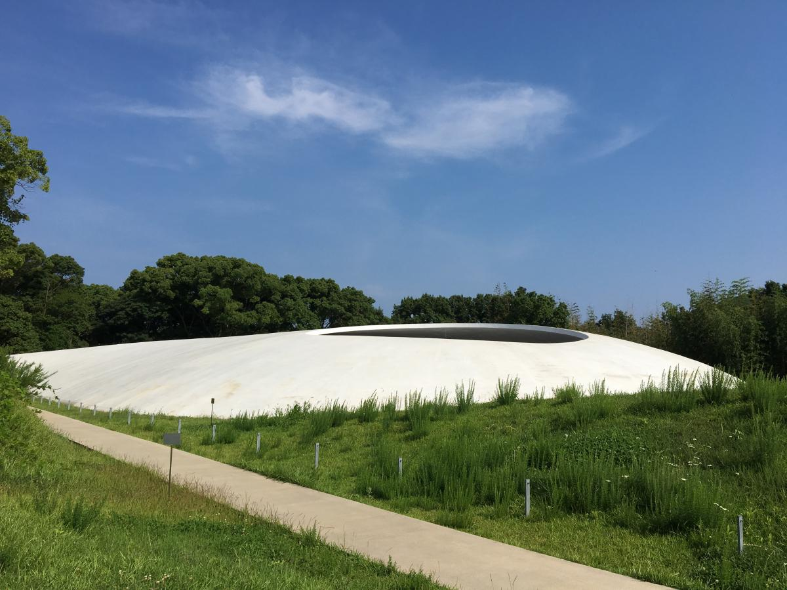

#show Japanese words
豊島美術館 | Teshima Art Museum

Home
Ticket
How to go
Enquiry
How to go | Route to Teshima Art Museum
豊島美術館 | Teshima Art Museum
〒 761-4662, O607 Teshimakarato, Tonosho-cho, Shozu-gun, Kagawa Prefecture, Japan
Tel
: 0879-68-3555
Fax
: 0879-68-2182
Click here
for more information for access within Toyoshima Island.
 